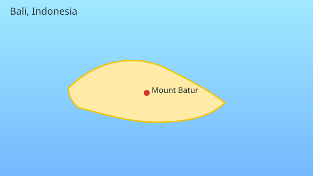
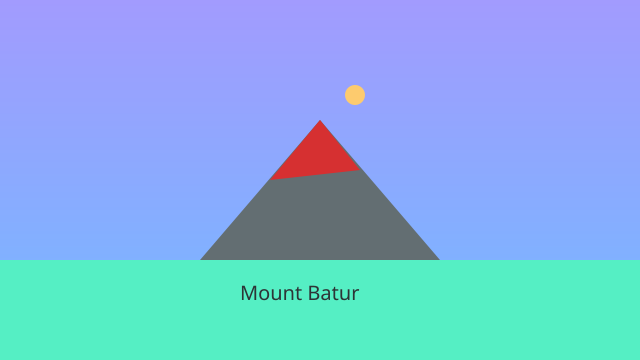
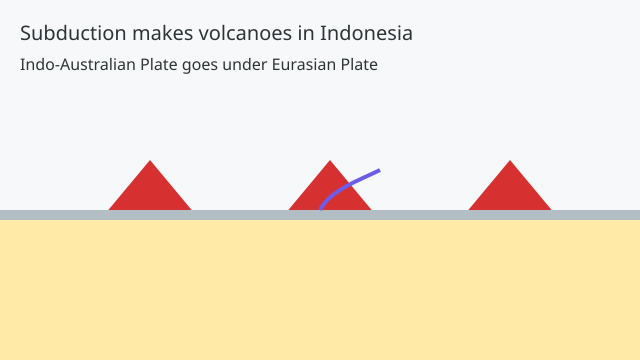
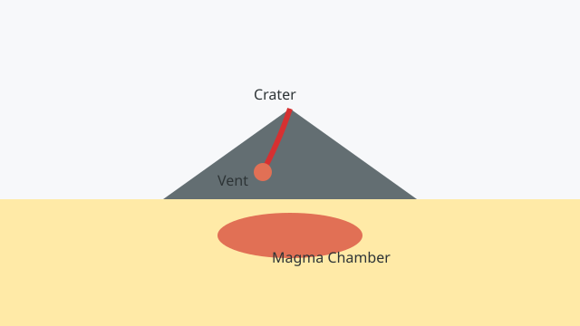
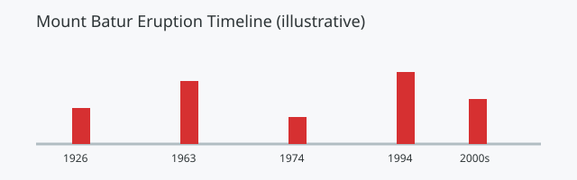
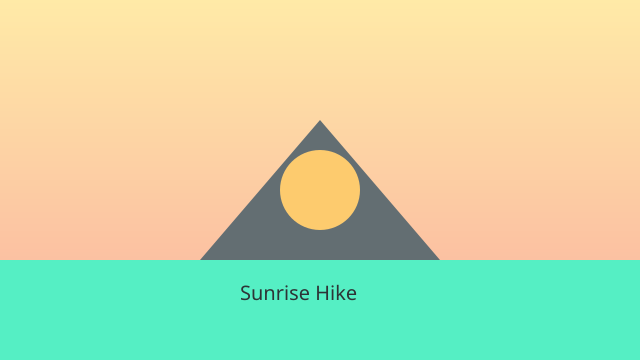

🌋 Mount Batur, Bali
Read about Bali’s famous volcano, then test your knowledge.
1. Where is Mount Batur?
Mount Batur is in Bali, Indonesia, inside a large bowl-shaped caldera in the Kintamani region.

2. Lake Batur
Lake Batur sits beside the volcano inside the caldera. People fish here and watch the sunrise over the water.

3. Is Mount Batur active?
Yes. Mount Batur is an active volcano. Eruptions have happened in modern times, so visitors follow safety rules.

4. How high is it?
Mount Batur is about 1,717 metres tall. Here’s a simple height comparison:
5. Why are there volcanoes in Indonesia?
Indonesia sits on the Ring of Fire. One tectonic plate goes under another. This helps make magma and volcanoes.

6. Inside a volcano
Volcanoes have a magma chamber, a vent, and a crater at the top. When pressure is high, magma becomes lava.

7. Eruptions over time
Mount Batur has erupted many times. Here is a simple timeline showing notable years.

8. Visiting and safety
Many people hike at sunrise. Always follow guides, keep to paths, and check activity levels.
